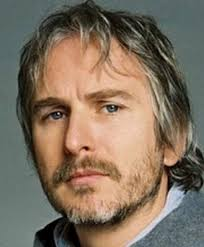

Franck Pitiot Né le 27 Juin 1964
Place De Kaamelott - 75000 Paris
06 99 99 99 99
frank.pitiot.@kaamelott.com
Permis B (permis voiture)
Exprériences professionelles
2016-2017
Les nouvelles Métamorphoses : acteur
2014-2015
Méli-Mélo : acteur
2010
Darwin 2 : coréalisateur, coscénariste et cocréateur avec Vincent Amouroux pour Canal+2
2009
Adieu De Gaulle, adieu de Laurent Herbiet : le Général Mathon (téléfilm)
2008
Un vrai Papa Noël de José Pinheiro : Antoine
2005-2009
Kaamelott: Perceval le Gallois
Langues parlées
Français
Anglais
Centres d'intéret
Théatre
Musique